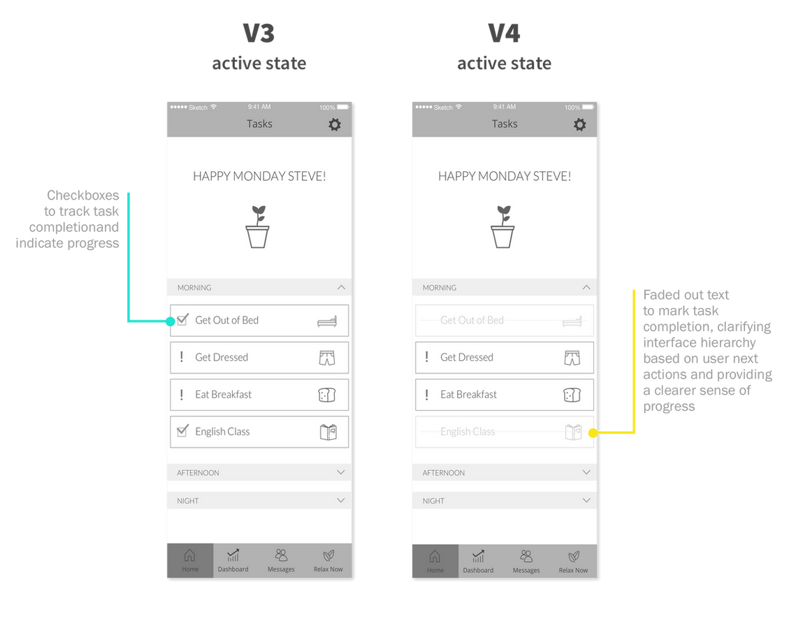
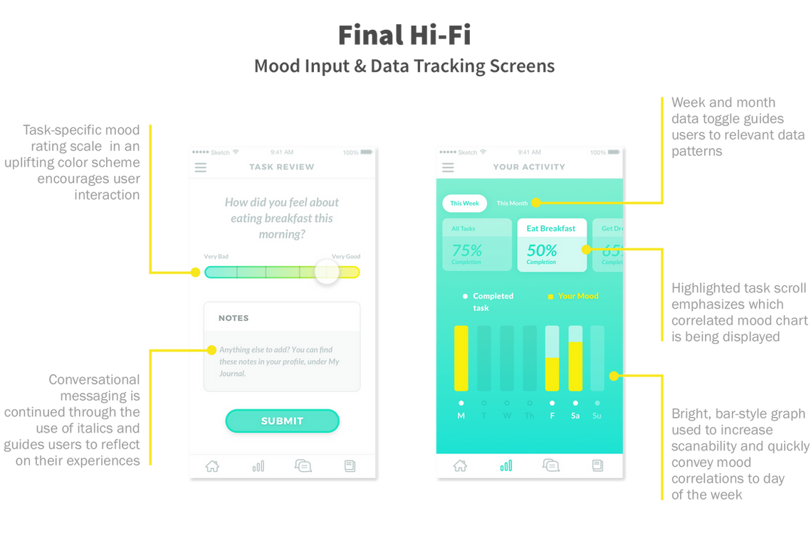
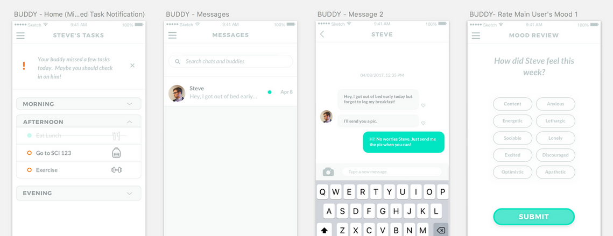

Atlas
Goals: Design a minimum viable product and brand direction for the Atlas app that supports two different user types and future integration of cognitive behavioral therapy exercises.

The role of Cognitive Behavioral Therapy (CBT)
Anxiety and despondency are both hallmark depressive symptoms, and have a dramatic impact on how people function in relationship to daily living.
CBT specifically addresses anxiety around daily activity by breaking down tasks into manageable chunks, and relating perceived feelings of stress and satisfaction to tasks both before and after completion. This form of self-reporting can help people learn about their mental frameworks and start to be more aware of the reason for mood changes when doing day to day activities. Atlas aims to help students overcome hurdles to self-care through a combination of CBT-style task management, therapist oversight, and support from loving friends and family.
The app will eventually be structured as a subscription-based service for therapists, whose clients are the main users for the flow we're designing, with accountability buddies who help the main users stay on track.
Research
Lo-Fi Iterations


Creating Mood with Hi-Fi



Project Reflections
This project offered a lot of challenges from the wide scope to the depth of knowledge required to really grasp the founder's vision for the app. Learning how to quickly parse what is valuable for a minimum viable project was a key skill I gained during this project, and helped me to internalize project approach from a business perspective. Additionally, the condensed research time frame forced a lot of creative teamwork to figure out how to find groups of people that could provide usable analogous research. I will certainly take this mindset forward with me when approaching new design projects and working out how to best gather data.